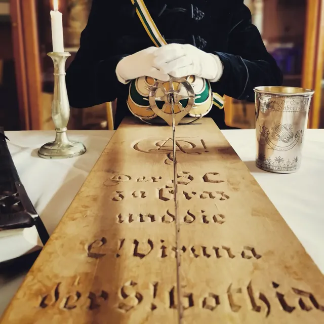
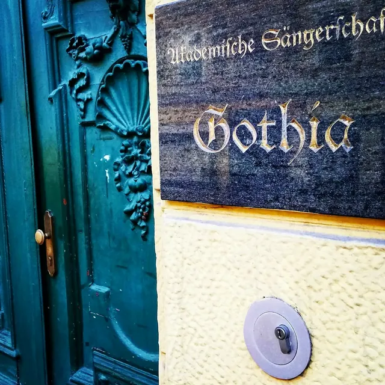
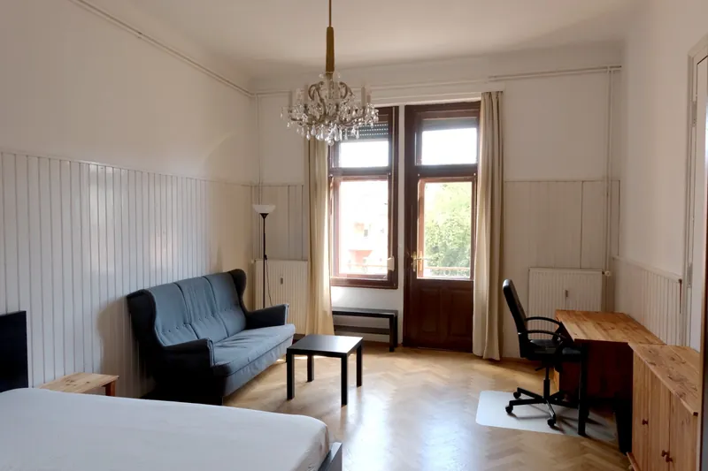
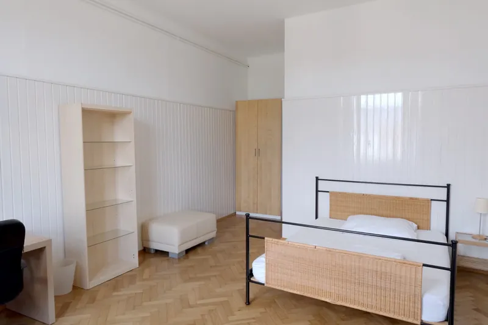
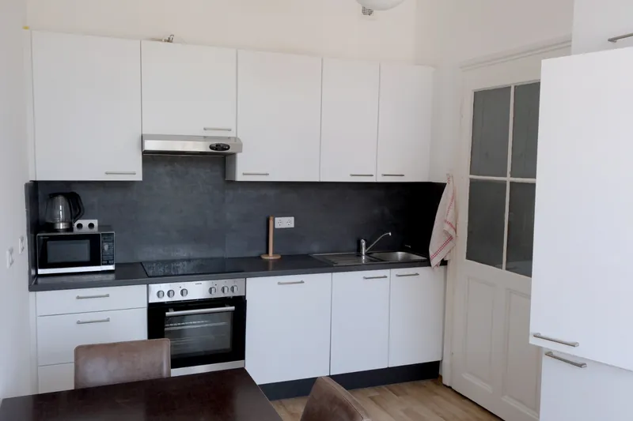

Herzstück
Musik
Pflege des mehrstimmigen Chorgesangs: Studentenlied, deutsches Volks- und Kunstlied, im offenen Blick auf die Chorliteratur der Welt.
Über uns
Seit 1863 verbindet die Gothia Studenten aus Österreich, Deutschland und weiteren Ländern weit über das Studium hinaus. Werde Teil einer Gemeinschaft, die dir in allen Lebenslagen zur Seite steht, und finde Freundschaften fürs Leben!
Wir singen, wir feiern, wir diskutieren — und wir stehen füreinander ein. Im Lebensbund bleiben Studenten und Alte Herren ein Leben lang verbunden.
Gaudeamus igitur, juvenes dum sumus.
Wofür wir stehen
Musik, Freundschaft, Tradition und Haltung — das tragen wir seit über 160 Jahren durch Graz.
Pflege des mehrstimmigen Chorgesangs: Studentenlied, deutsches Volks- und Kunstlied, im offenen Blick auf die Chorliteratur der Welt.

Im Lebensbund stehen Bundesbrüder füreinander ein — über das Studium hinaus und ein Leben lang. Aus gemeinsamen Erlebnissen wachsen Freundschaften, die bleiben.

Bekenntnis zur eigenen Geschichte, den nationalliberalen Grundsätzen verpflichtet, und Verantwortung für künftige Generationen.
Einander und allen Menschen ohne Hochmut begegnen: im fairen Gespräch, auf fundierter Kenntnis, mit gepflegtem Auftreten.
Chor
Hier findet jede Stimme ihren Platz! Studentenlied, Volkslied, Kunstlied — vierstimmig, mit Herz und am liebsten gemeinsam.
„Aber ich kann eigentlich nicht singen“ — keine Sorge! Begeisterung und Freude an der Musik sind alles, was du brauchst, der Rest kommt von ganz allein. Komm einfach vorbei und mach mit.
Lieber zuerst reinhören? Auf unserem Spotify-Kanal kannst du unsere Aufnahmen in aller Ruhe genießen — und bald auch deine eigene Stimme.



Studentenheim
Deine Wohnungssuche hat ein Ende! Am Gothenhaus findest du nicht nur eine leistbare Wohnung im Herzen von Graz für dein Studium, sondern sammelst auch Erinnerungen, die dich ein Leben lang begleiten werden.
Unsere Wurzeln
Seit 1863 — geprägt von Freundschaft, Musik und akademischem Geist.
In einer Studentenversammlung an der alten Universität Graz wird die Gründung eines Akademischen Gesangvereins beschlossen — aus der Freude am gemeinsamen Singen.
Am 25. Jänner 1863 genehmigt die k.k. Statthalterei die Statuten des Akademischen Gesangvereins (AGV) — die älteste behördlich genehmigte studentische Gemeinschaft in Graz. Gründungschormeister ist Johann Nepomuk Fuchs.
Die Gothia erwirbt ihr eigenes Haus in der Leonhardstraße 27 — seither Mittelpunkt des gemeinsamen Lebens.
1938 wird die Gothia aufgelöst. Nach dem Krieg gelingt 1950 die Rückgewinnung des Gothenhauses, 1952 die Wiederbegründung der Sängerschaft.
Die Gothia feiert ihr 150-jähriges Bestehen — „Gaudeamus igitur – 150 Jahre Akademische Sängerschaft Gothia zu Graz“.
Rund 150 Mitglieder in Österreich und Deutschland — aktiv, vernetzt und stets verwurzelt in der langen Tradition der Gothia.
Werde Teil von uns
Du suchst mehr als nur ein Studium? Erfahre aus nächster Nähe das Lebensbundprinzip, triff neue Freunde aus unterschiedlichsten Sparten und lege noch heute das Fundament für ein erfülltes Leben. Wir freuen uns auf dich!
Kontakt
Freundschaft, Musik und Tradition warten auf dich. Schreib uns — wir melden uns persönlich bei dir.
Dein E-Mail-Programm öffnet sich mit deiner Nachricht — du musst sie nur noch abschicken.